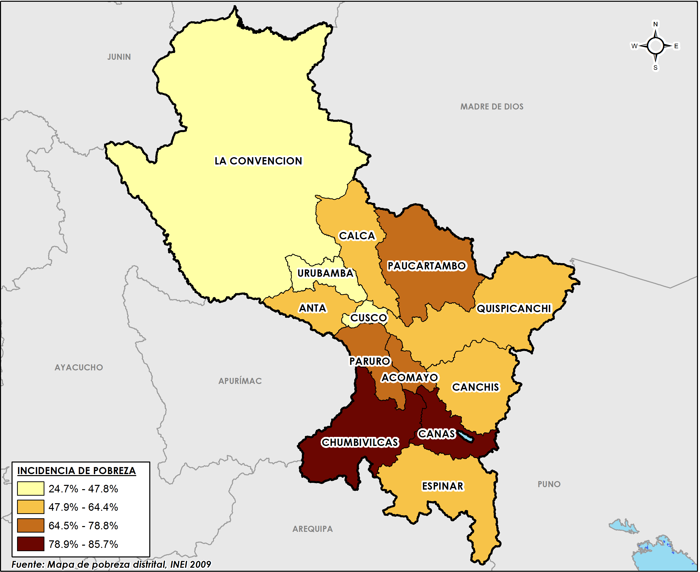
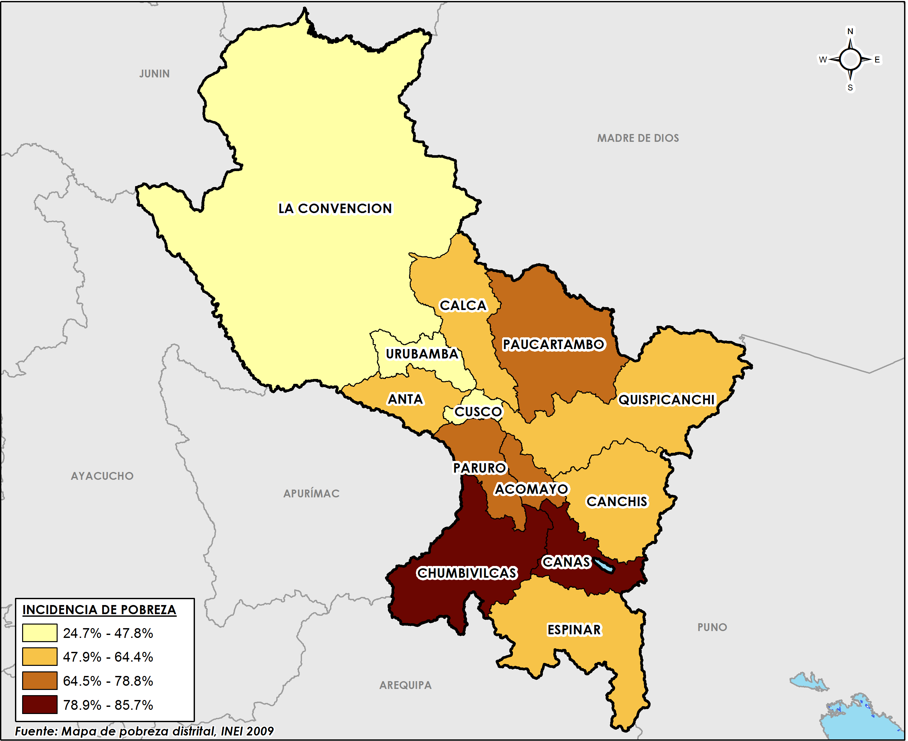

Cuzco fue la capital y sede de Gobierno del Reino de los Incas y lo siguió siendo al iniciarse la época imperial, convirtiéndose en la ciudad más importante de los Andes y de América del Sur. Este centralismo le dio auge y se convirtió en el principal foco cultural y eje del culto religioso.
 
